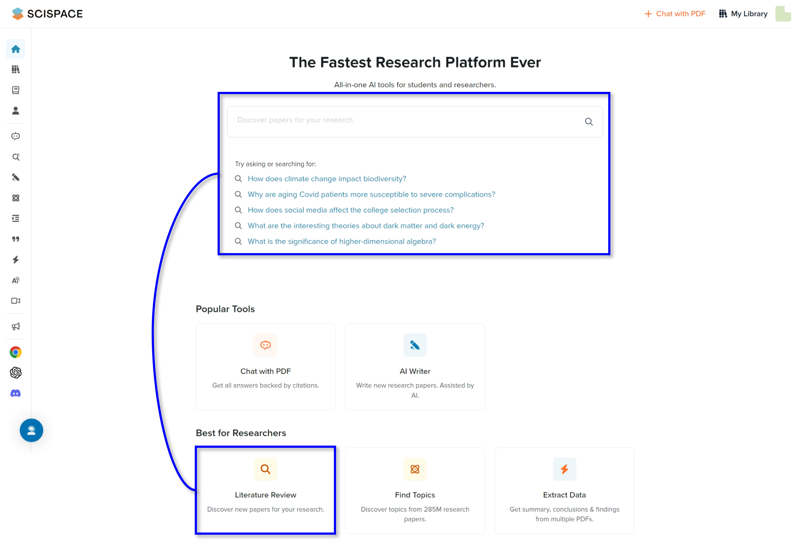
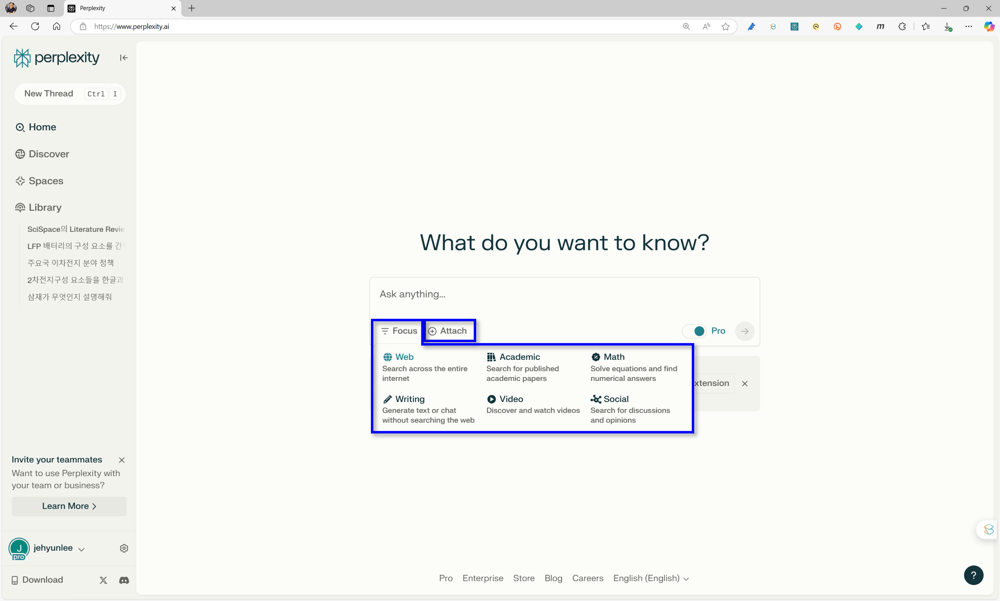
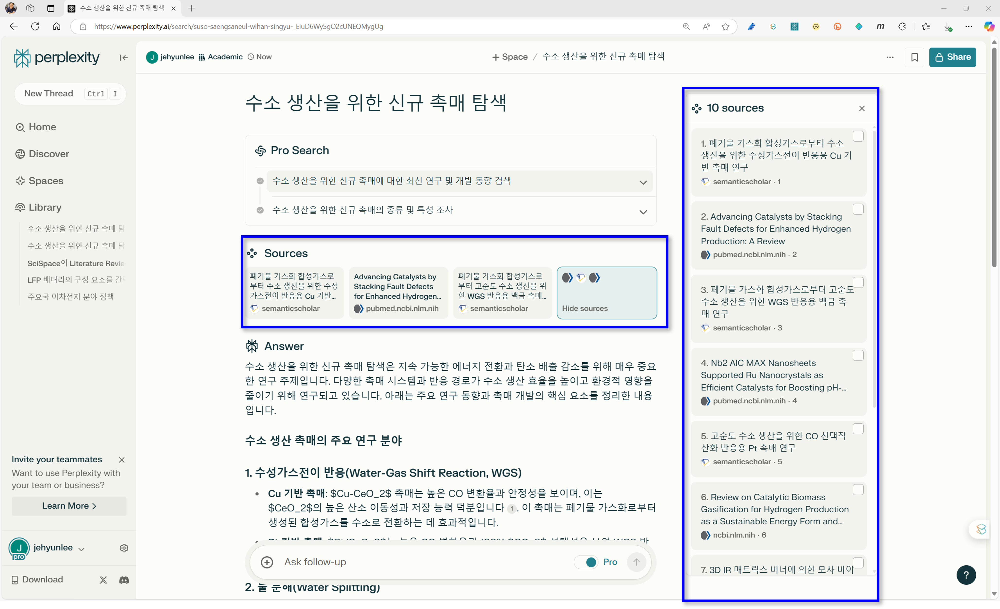
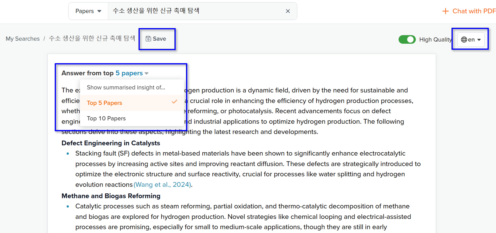
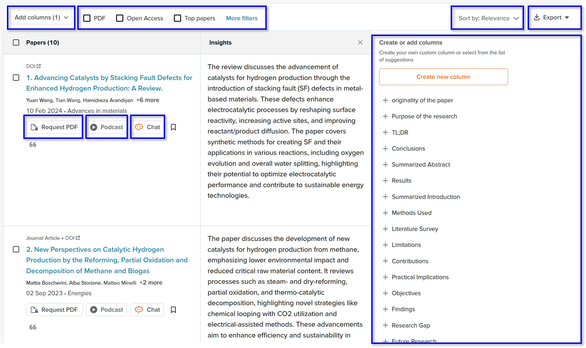
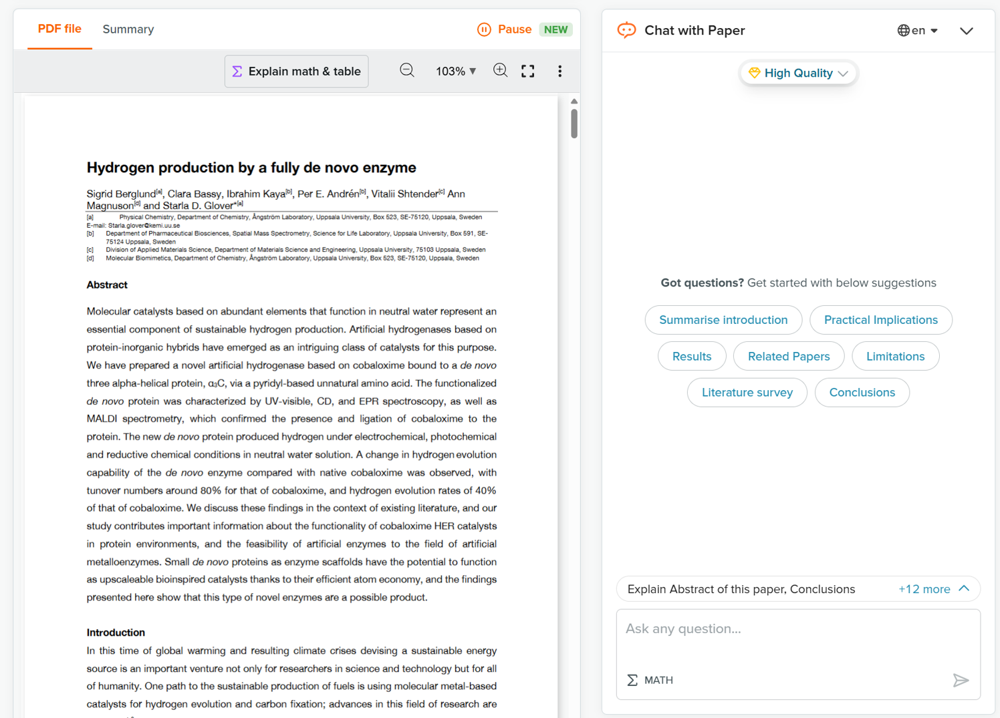
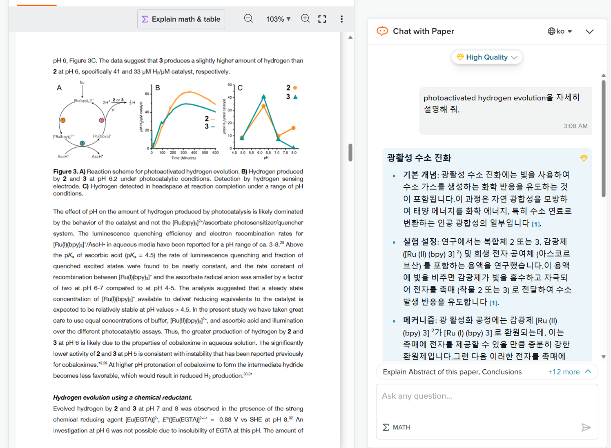

- SciSpace 두 번째 글입니다.
- 원하는 정보를 담은 글들을 찾아 읽고 내용을 정리하는 일은 연구자의 일상이지만 만만치 않습니다.
- 검색과 정리 능력을 활용해 이를 편안하게 도와주는 기능들을 소개합니다. 단, 한계가 있습니다.
2. Literature Review
2.1. Perplexity와 비교
SciSpace에 들어서면 다음과 같은 화면을 마주합니다.- 정 가운데 구글을 닮은 검색창이 있고, 아래 이런 질문을 해보지 않으련?하는 느낌으로 몇 개의 예시가 있습니다.
- 본능을 억누르고 마우스 휠을 굴려 아래로 향하면 여러 기능들이 등장합니다.
- 여기 등장하는 Literature Review가 위에 있는 검색창과 같은 기능을 합니다.

- Literature Review는 Perplexity와 비슷합니다.
- 사용자의 질의(query)를 받아 웹 검색을 하고, 여기서 찾은 자료를 정리하여 문장으로 제공합니다.
- 비교를 위해 Perplexity 화면을 먼저 보겠습니다.

- 화면 가운데 있는 검색창에 질의를 하면 웹 검색을 통해 답을 모아줍니다.
- 최근 ChatGPT에도 뒙 검색기능이 추가되어 비슷한 기능이 구현되었습니다.
- Perplexity에는 ChatGPT에 (아직) 없는 기능이 있는데, 검색 범위를 한정하는 것입니다.
- 왼쪽 아래
Focus버튼을 누르면 여섯 가지 범위가 나옵니다. - 이 중
Academic를 선택하면 학술 문서들을 대상으로 검색합니다.
- 예를 들어 이와 같이 선택하고 수소 생산을 위한 신규 소재 탐색이라고 질의하면,
- 논문들을 찾아 검색한 결과만을 보여줍니다.
- 아래 그림에서 답변 생성에 활용된 학술논문들 10개의 목록이 보입니다.
- 자세히 보면 논문들의 출처가
semanticscholar와pubmed입니다.
2.2. Review

- 같은 질의를 SciSpace의 Literature Review에 넣으면 다음과 같은 결과가 나옵니다.
- 먼저 상단에 논문 다섯 편의 정보를 활용한 답변이 출력되고,
- 그 아래 논문 열 편의 목록과 함께 각 논문에서 얻은 insights가 제공됩니다.
- 마지막으로 맨 하단에 Perplexity와 유사하게 Related Questions가 다섯 개 제시되고 있습니다.

- 왜 10편의 목록을 보여주면서 5편만 가지고 정리하나 싶지만,
- 답변 상단을 보면 몇 편의 내용을 정리시킬지를 선택할 수 있습니다.
- 10편으로 정리하라면 10편으로 정리합니다.
- 또, 언어를 설정할 수 있습니다.
- 한국사람인 만큼 한글이 편하지만 전문용어를 최대한 반영하고자 영어로 설정하는 편입니다.
- Save 버튼을 누르면 결과를 저장하여 나중에 다시 열어볼 수 있습니다.
2.3. Papers

- 본문으로 가면 유용한 기능이 많습니다.
- 질의에 답변하기 위해 찾은 논문들이 표 형태로 정리되어 있습니다.
- 행을 따라 논문들이 놓여 있고, 열에는 논문 서지정보와 Insights 정도만 있지만 오른쪽에 여러 열들을 계속 붙일 수 있습니다.
- 예를 들어 Conclusions 열을 추가하면 논문들의 결론을 모아 볼 수 있습니다.
- 여러 논문들을 함께 나란히 놓고 비교할 수 있다는 장점이 있지만 추천하지 않습니다.
- 몇 가지 이유가 있습니다.
(1) Open Access 논문이 아닌 경우, 초록에서만 정보를 가져옵니다. 매우 제한적일 수 밖에 없습니다.
(2) 표에 담으려다보니 극단적으로 짧게 요약합니다. 중요 정보가 누락되는 경우가 많습니다.
(3) 잘못 찾거나 못찾는 경우가 적지 않습니다. 해당 논문을 따로 열어서 보면 잘 찾습니다.
- 상단에 필터를 걸어 논문들을 선별할 수 있는데, PDF나 Open Access를 선택하시는 것을 추천합니다.
- 논문의 본문을 볼 수 있어 깊이 파고들며 발췌독을 하기에 좋기 때문입니다.
- More Filters를 누르면 년도, 저널 등을 선택할 수 있습니다.
- 참고할만한 정보를 확보했다는 전제 하에 우측 상단위 Export버튼을 눌러보셔도 좋습니다.
- 화면에 보이는 정보들을 선택에 따라 CSV, Excel, BibTeX, XML, RIS 등 형식으로 내려받을 수 있습니다.
- 참고문헌 목록을 만들어 정리할 때 매우 유용합니다.

- 최근 추가된 기능으로 Podcast가 재미있습니다.
- 클릭하면 논문의 길이에 따라 수십 초에서 수 분 정도 후에 남녀 한 명씩이 논문 내용을 설명해주는 podcast가 재생됩니다.
첫 번째 논문의 예시를 내려받아 확인해보셔도 좋습니다.- 개인적인 느낌으로 Google NotebookLM에서 제공하는 Audio Overview에 비해 생동감이 덜해서 아쉽습니다.
- PDF 파일이 있는 논문의 제목을 클릭한 수 스크롤을 내리면 다음과 같은 화면을 볼 수 있습니다.
- 왼쪽에는 논문의 본문, 오른쪽에는 Chat with Paper라는 이름으로 챗봇이 붙어 있습니다.
- 챗봇에 요청을 해서 본문의 내용을 끄집어낼 수 있습니다.

- 일종의 AI를 사용한 발췌독이 가능한 셈입니다.
- 논문을 빠르게 읽기 위해 통으로 요약하는 것이 흔하지만, 디테일이 날아가고 왜곡이 발생합니다.
- 이를 방지하기 위해 요약보다 발췌를 하는 것을 추천드립니다.
- GPT에 PDF를 올리고 넣는 프롬프트 기준으로 예를 들면, 200단어로 요약해줘라고 하지 말고
- 저자들은 이 연구에서 어떤 문제를 해결하려고 했어?, 본문 중 OOO를 확인하기 위해 사용된 분석 기법이 뭐야?처럼 묻는 식입니다.

- 자세하게 물어보면 자세한 답변을 얻을 수 있습니다.
- 특히 SciSpace를 유료 구독하여 High Quality 모드를 사용하면 더 정확한 답변을 얻을 수 있습니다.
- 자세한 사용법은 Chat with PDF글에서 다시 설명드리겠습니다.
2.4. 맺음말
- 검색 능력에 LLM을 붙여 정리를 시키는 것은 지금은 보편화된 기술입니다.
- AI 활용 기술이 보편화될수록 쉽게 사용할 수 있는 반면,
- 특정 분야에 전문성이 있는 사람이나 도구를 쓸 때와 같은 날카로움은 기대하기 어렵습니다.
- 이럴 수록 내가 무엇을 얻을 수 있으며 무엇은 기대할 수 없는지 명확하게 알아야 합니다.
- 그리고 내 능력의 한계를 벗어나면 판단을 할 수 없는 만큼, 스스로의 역량을 갈고 닦아야 합니다.